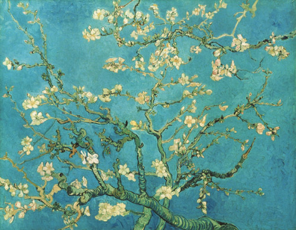
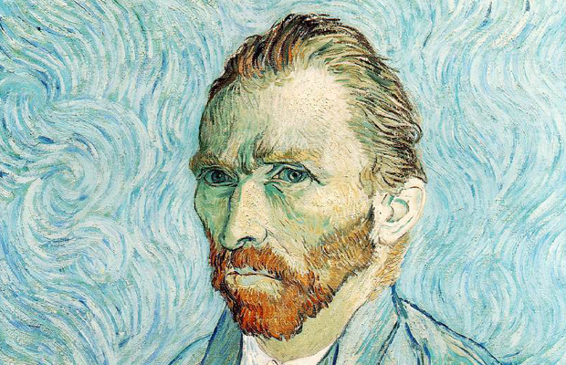
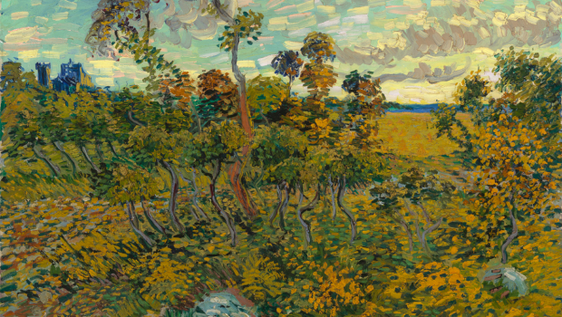
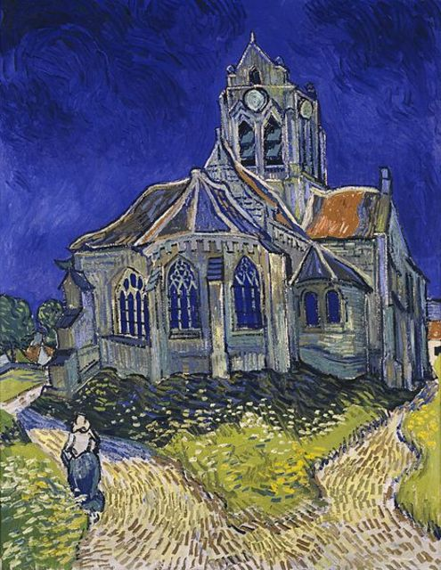

Amendoeira em Flor
Parte da série: Almond Blossoms ( Museu Van Gogh )

Auto-retratos (1886-1890) - Van Gogh pintou trinta e cinco entre 1886 e 1889.

Still Life: Vase with Pink Roses
Localização: Galeria Nacional de Arte

Casas em Auvers
Criação: junho de 1890–junho de 1890

Pôr do Sol em Montmajour
Criação: 1888
Durante anos, o quadro permaneceu no sótão de um colecionador norueguês.

A Igreja de Auvers
Localização: Museu de Orsay